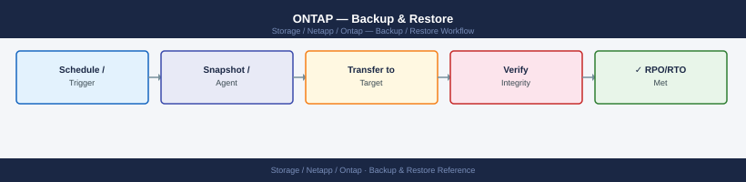
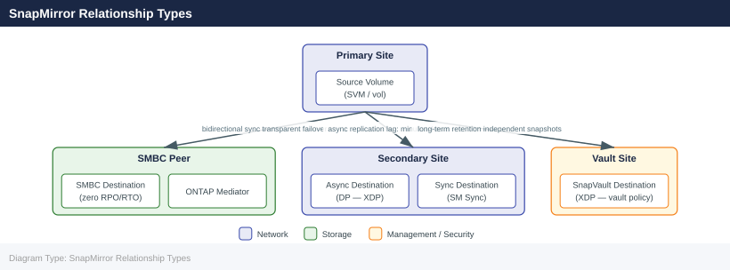

ONTAP — Backup & Restore¶

Before you begin¶
- Access: Storage admin credentials (cluster admin or equivalent)
- Timing: safe to run during business hours unless a step is marked ⚠ (causes interruption)
- Dependencies: no active upgrades or migrations on the same infrastructure
- Logging: capture command output — paste into the change record on completion
Snapshot-Based Restore¶
ONTAP snapshots are read-only, space-efficient point-in-time copies stored within the volume they protect. They are near-instant to create and consume space only for changed blocks after the snapshot is taken. Snapshots are the first line of recovery for accidental deletions, data corruption, and test/dev rollback.
Snapshot Policies¶
# List existing snapshot policies
volume snapshot policy show
# Show the policy assigned to a specific volume
volume show -vserver <svm> -volume <vol> -fields snapshot-policy
# Create a snapshot policy (daily schedule, 7 copies retained)
volume snapshot policy create -policy daily-7 -enabled true
volume snapshot policy add-schedule -policy daily-7 -schedule daily -count 7
# Assign a policy to a volume
volume modify -vserver <svm> -volume <vol> -snapshot-policy daily-7
Policy Enabled Schedules
---------------------------------------- -------- -----------
default true hourly, daily, weekly, monthly
daily-7 true daily
weekly-backup true weekly, monthly
(Vserver: svm-prod, Volume: data_vol01)
Snapshot Policy: default
Created snapshot policy "daily-7".
Added schedule "daily" to policy "daily-7" with count 7.
Volume modify successful for volume "data_vol01" in Vserver "svm-prod".
Common errors
Error: "daily-7" already exists. — Use a unique policy name or delete the existing policy with volume snapshot policy delete -policy daily-7 first.
Error: Invalid vserver "svm-prod". — Verify the SVM name with vserver show and ensure you are connected to the correct cluster.
Error: Volume "data_vol01" does not exist in Vserver "svm-prod". — Confirm the volume name and SVM with volume show -vserver <svm> before assigning the policy.
Recommended snapshot schedule for production volumes:
| Schedule | Retention | Use Case |
|---|---|---|
| Hourly | 24 copies | Active development, frequent change workloads |
| Daily | 7 copies | Standard production data volumes |
| Weekly | 4 copies | Slower-changing data, compliance retention |
| Monthly | 12 copies | Long-term on-array retention (use SnapVault for >12 months) |
Listing and Reviewing Snapshots¶
# List all snapshots for a volume
volume snapshot show -vserver <svm> -volume <vol>
# Show snapshot details including size and creation time
volume snapshot show -vserver <svm> -volume <vol> -fields size,create-time,busy,owners
# Check total snapshot space consumption on a volume
volume show -vserver <svm> -volume <vol> -fields snapshot-percent,size,used
# Access snapshots directly from an NFS client (read-only)
ls /mnt/vol/.snapshot/
# Access snapshots from an SMB client (read-only)
# Navigate to \\server\share\~snapshot\ in Windows Explorer
Vserver Volume Snapshot Create Time
----------- ------------ ----------------------------------- ---------------
prod-svm data_vol hourly.2024-01-15_0800 Jan 15 08:00
prod-svm data_vol hourly.2024-01-15_0900 Jan 15 09:00
prod-svm data_vol daily.2024-01-14 Jan 14 00:00
prod-svm data_vol weekly.2024-01-08 Jan 08 00:00
Vserver Volume Snapshot Size Create Time Busy Owners
----------- ------------ -------------------- --------- ------------------- ---- ----------
prod-svm data_vol hourly.2024-01-15_0800 2.4GB Jan 15 08:00:12 No -
prod-svm data_vol hourly.2024-01-15_0900 2.6GB Jan 15 09:00:08 No -
prod-svm data_vol daily.2024-01-14 5.1GB Jan 14 00:00:01 No -
Vserver Volume Snapshot Percent Size Used
----------- ------------ --------------- --------- ---------
prod-svm data_vol 18% 500GB 89GB
total 0
dr-xr-xr-x 4 root root 4096 Jan 15 09:00 hourly.2024-01-15_0800
dr-xr-xr-x 4 root root 4096 Jan 15 08:00 hourly.2024-01-15_0900
dr-xr-xr-x 4 root root 4096 Jan 14 00:00 daily.2024-01-14
dr-xr-xr-x 4 root root 4096 Jan 08 00:00 weekly.2024-01-08
Common errors
Error: command failed: invalid vserver name "<svm>" — Replace <svm> with the actual SVM name (e.g., prod-svm) and verify it exists with vserver show.
Error: command failed: invalid volume name "<vol>" — Replace <vol> with the actual volume name (e.g., data_vol) and confirm the volume exists on the specified SVM.
ls: cannot access '/mnt/vol/.snapshot/': Permission denied — Ensure the NFS mount includes the snapdir=visible option and the client has read permissions on the volume.
Restoring a Single File or Directory¶
Clients can access snapshots directly and copy files back without storage administrator intervention:
# NFS client — copy a file from a snapshot back to the live volume
cp /mnt/vol/.snapshot/daily.2026-05-01_0010/important_file.txt /mnt/vol/important_file.txt
Common errors
cp: cannot open '/mnt/vol/.snapshot/daily.2026-05-01_0010/important_file.txt' for reading: No such file or directory — Verify the snapshot name and file path exist by listing the snapshot directory with ls -la /mnt/vol/.snapshot/.
cp: cannot create regular file '/mnt/vol/important_file.txt': Permission denied — Ensure the NFS mount has write permissions and the user has sufficient privileges; check mount options with mount | grep /mnt/vol.
For files exposed via SMB, Windows clients can use the Previous Versions tab on any file or folder to restore directly from ONTAP snapshots.
Restoring a Full Volume to a Snapshot¶
A volume snapshot restore reverts the entire volume to the state at snapshot creation. This is destructive — all changes after the snapshot are lost. Always verify the snapshot contains the required data before proceeding.
# Verify the snapshot exists and note its creation time
volume snapshot show -vserver <svm> -volume <vol> -fields snapshot,create-time
# Take a pre-restore snapshot (safety net before restoring)
volume snapshot create -vserver <svm> -volume <vol> -snapshot pre-restore-$(date +%Y%m%d)
# Offline the volume (required for a full snapshot restore)
volume offline -vserver <svm> -volume <vol>
# Restore the volume to the snapshot
volume snapshot restore -vserver <svm> -volume <vol> -snapshot <snap_name>
# Bring the volume back online
volume online -vserver <svm> -volume <vol>
Vserver Volume Snapshot Create Time
--------- ----------------- ------------------------ ------------------------
svm01 data_vol hourly.2024.01.15_0800 1/15/2024 08:00:15
svm01 data_vol daily.2024.01.14_0000 1/14/2024 00:00:02
svm01 data_vol weekly.2024.01.08_0000 1/8/2024 00:00:01
Volume "data_vol" on Vserver "svm01" has been created successfully.
Volume "data_vol" on Vserver "svm01" has been taken offline.
Volume snapshot restore: Restoring volume "data_vol" on Vserver "svm01" from snapshot "hourly.2024.01.15_0800".
This operation will overwrite all data on the volume. Do you want to continue? {y|n}: y
Restore of snapshot "hourly.2024.01.15_0800" completed successfully.
Volume "data_vol" on Vserver "svm01" has been brought online.
Common errors
Error: command failed: Volume "data_vol" is not offline — Run volume offline -vserver <svm> -volume <vol> before attempting the restore operation.
Error: command failed: Snapshot "snap_name" does not exist — Verify the exact snapshot name using volume snapshot show and ensure you are targeting the correct Vserver and volume.
Error: command failed: Volume has active CIFS/NFS connections — Disconnect all clients accessing the volume before taking it offline with volume offline -vserver <svm> -volume <vol> -force true.
For ONTAP 9.12+ with the SnapRestore license, online restore is supported — the volume remains accessible during restore, which is useful for large volumes where downtime is unacceptable:
Restoring snapshot "daily.2024-01-15_0200" to volume "data_vol" on SVM "prod_svm"...
Restore operation started. Snapshot restore job ID: 12345
Volume "data_vol" is now online and accessible.
Restore completed successfully in 47 seconds.
Common errors
Error: command not found — Ensure you are connected to the ONTAP cluster via SSH or the ONTAP CLI, not your local shell.
Error: volume does not exist — Verify the SVM name and volume name are correct using volume show -vserver <svm>.
Error: snapshot does not exist — List available snapshots with volume snapshot show -vserver <svm> -volume <vol> and use the exact snapshot name.
FlexClone for Non-Destructive Test Restore¶
FlexClone creates an instant writable copy of a volume from a snapshot without consuming additional space. Use this to validate restore content before committing to a production restore:
# Create a FlexClone from a production snapshot
volume clone create \
-vserver <svm> \
-flexclone <clone_name> \
-parent-volume <source_vol> \
-parent-snapshot <snap_name> \
-junction-path /<clone_name>
# Mount and verify the data
# After validation, delete the clone
volume clone delete -vserver <svm> -flexclone <clone_name>
Volume clone create: Command issued successfully
Waiting for clone operation to complete...
Clone creation completed successfully.
Volume "prod_clone_test" created successfully with junction path "/prod_clone_test"
Volume is online and ready for access.
Volume clone delete: Command issued successfully
FlexClone volume "prod_clone_test" has been deleted successfully.
Deleting associated snapshot dependencies...
Clone deletion completed.
Common errors
Error: command failed: Snapshot "snap_name" does not exist on volume "source_vol" — Verify the snapshot exists on the parent volume using volume snapshot show -vserver <svm> -volume <source_vol>.
Error: command failed: Volume "clone_name" already exists — Use a unique clone name or delete the existing clone with volume clone delete -vserver <svm> -flexclone <clone_name> first.
Error: command failed: Junction path "/<clone_name>" is already in use — Specify a different junction path or remove the existing mount point before creating the clone.
SnapMirror Relationship Types¶

SnapMirror Failover (DR Restore)¶
SnapMirror replicates volumes asynchronously to a destination cluster or SVM. The destination volume is read-only under normal operation. Failover (breaking the relationship) makes it writable for disaster recovery.
DR Failover Sequence¶
Standard Failover Procedure¶
# 1. Confirm the relationship state and last successful transfer
snapmirror show -destination-path <dest_svm>:<dest_vol> \
-fields source-path,destination-path,lag-time,healthy,last-transfer-end-timestamp
# 2. Quiesce the relationship (stop new transfers, allow current to complete)
snapmirror quiesce -destination-path <dest_svm>:<dest_vol>
# 3. Break the relationship — destination volume becomes writable
snapmirror break -destination-path <dest_svm>:<dest_vol>
# 4. Mount or present the destination volume to DR hosts
volume mount -vserver <dest_svm> -volume <dest_vol> -junction-path /<dest_vol>
# 5. Create NFS exports or CIFS shares on the DR SVM as needed
Source Path: cluster1_svm:prod_vol
Destination Path: cluster2_svm:prod_vol_dr
Lag Time: 00:00:15
Healthy: true
Last Transfer End Timestamp: 2024-01-15 14:32:47 +00:00
Operation succeeded: SnapMirror relationship quiesced.
Waiting for current transfer to complete...
Transfer completed successfully.
Operation succeeded: SnapMirror relationship broken.
Destination volume cluster2_svm:prod_vol_dr is now writable.
Volume mount: Mount operation completed successfully.
Volume cluster2_svm:prod_vol_dr mounted at junction path /prod_vol_dr
Common errors
Error: command failed: relationship does not exist — Verify the destination path syntax matches exactly (SVM:volume format) and the relationship exists with snapmirror show.
Error: command failed: destination volume is not in a SnapMirror relationship — Confirm the SnapMirror relationship is initialized and healthy before attempting to break it.
Error: command failed: junction path already exists — Use a different junction path or remove the existing mount point before mounting the destination volume.
Resync After Primary Recovery¶
When the primary site is restored, resync re-establishes the replication relationship. The resync operation is incremental — only changed blocks since the failover are transferred.
# After returning to primary, reverse-resync from DR back to primary
# (makes primary the destination, DR the temporary source)
snapmirror resync -source-path <dest_svm>:<dest_vol> \
-destination-path <src_svm>:<src_vol>
# After data is synced back, reverse the relationship to restore original direction
snapmirror break -destination-path <src_svm>:<src_vol>
snapmirror resync -destination-path <dest_svm>:<dest_vol>
Operation is queued: snapmirror resync to destination "cluster2://dr_svm/dr_volume".
[Job 1234] Job succeeded: snapmirror resync completed.
Transfer size: 2.4GB
Last transfer duration: 00:12:34
Healthy: true
Operation is queued: snapmirror break for destination "cluster1://prod_svm/prod_volume".
[Job 1235] Job succeeded: snapmirror break completed.
SnapMirror relationship broken.
Operation is queued: snapmirror resync to destination "cluster2://dr_svm/dr_volume".
[Job 1236] Job succeeded: snapmirror resync completed.
Transfer size: 156MB
Last transfer duration: 00:03:12
Healthy: true
Common errors
Error: command failed: relationship does not exist — Verify the source and destination paths are correctly formatted as svm_name:volume_name and that the SnapMirror relationship exists.
Error: command failed: destination is not a SnapMirror destination — Ensure the break command targets the correct destination path and that the relationship is in a valid state before breaking.
SVM DR (Full SVM Failover)¶
SVM DR replicates the entire SVM configuration — namespace, NFS exports, CIFS shares, LIF configuration, and data volumes — to a destination SVM. This enables full site failover including protocol configuration, not just volume data.
# Show SVM DR relationships
snapmirror show -type DP -fields source-path,destination-path,lag-time,healthy
# Activate the destination SVM (failover)
snapmirror break -destination-path <dest_svm>:
# Check SVM state on destination
vserver show -vserver <dest_svm>
# Verify volumes and LIFs were activated
volume show -vserver <dest_svm>
network interface show -vserver <dest_svm>
Source Destination Lag Time Healthy
======================== ======================== ============= =======
source_svm: dest_svm: 00:00:15 true
source_svm:vol_data dest_svm:vol_data 00:00:12 true
source_svm:vol_logs dest_svm:vol_logs 00:00:18 true
Operation succeeded: SnapMirror relationship broken for destination-path "dest_svm:".
Admin Operational Root
Vserver Type Subtype State State Volume Aggregate
=========== ======= ============== ========== ========== ======== ===========
dest_svm data default running running vol_root aggr1
Vserver Volume Aggregate State Type Size
=========== ============ ============ ========== ========== ==========
dest_svm vol_data aggr1 online DP 500GB
dest_svm vol_logs aggr1 online DP 250GB
dest_svm vol_root aggr1 online RW 20GB
Vserver Interface IP Status Is Home
=========== =============== =============== =========== ==========
dest_svm data_lif_01 192.168.1.45 up true
dest_svm data_lif_02 192.168.1.46 up true
dest_svm mgmt_lif 192.168.1.50 up true
Common errors
Error: command failed: SnapMirror relationship is not in a quiesced state — Run snapmirror quiesce -destination-path <dest_svm>: before attempting to break the relationship.
Error: There is no data Vserver with name "<dest_svm>" — Verify the destination SVM name is correct and exists on the destination cluster using vserver show.
Error: SnapMirror relationship does not exist — Confirm the DP relationship is initialized and healthy by checking snapmirror show -type DP output before breaking it.
SnapVault (Long-Term Retention)¶
SnapVault uses the XDP (Extended Data Protection) relationship type to create independent backup copies with configurable long-term retention policies. Destination snapshots are independent of the source — source snapshots can be deleted without affecting SnapVault copies.
SnapVault Relationship Setup¶
# Create a SnapVault relationship (XDP type)
snapmirror create \
-source-path <src_svm>:<src_vol> \
-destination-path <vault_svm>:<vault_vol> \
-type XDP \
-policy XDPDefault
# Initialize (baseline transfer)
snapmirror initialize -destination-path <vault_svm>:<vault_vol>
# Monitor initialization progress
snapmirror show -destination-path <vault_svm>:<vault_vol> -transfer-progress
Operation succeeded: SnapVault relationship created.
Operation succeeded: SnapMirror operation queued.
Destination Path: prod_vault_svm:prod_vault_vol
Relationship Type: vault
Admin State: snapmirrored
Mirror State: initializing
Unhealthy Reason: -
Progress: 45%
Elapsed Time: 12m34s
Estimated Remaining Time: 15m22s
Network Compression Ratio: 1.2:1
Snapshot Progress: 8 of 12 snapshots transferred
Last Transfer Size: 847.3GB
Last Transfer Duration: 8m15s
Common errors
Error: command failed: Relationship already exists. — Verify the relationship doesn't already exist with snapmirror show -destination-path <vault_svm>:<vault_vol> before creating.
Error: command failed: Source volume <src_svm>:<src_vol> does not exist. — Confirm source volume name and SVM are correct and the source cluster is reachable via cluster peering.
Error: command failed: Destination volume <vault_svm>:<vault_vol> does not exist or is not a DP volume. — Create the destination volume first with volume create -vserver <vault_svm> -volume <vault_vol> -aggregate <aggr> -type DP -size <size>.
SnapVault Policy Configuration¶
# Show SnapMirror/SnapVault policies
snapmirror policy show
# Show retention rules on the default XDP policy
snapmirror policy show-rule -policy XDPDefault
# Create a custom vault policy with 90-day retention
snapmirror policy create -vserver <vault_svm> -policy vault-90d -type vault
snapmirror policy add-rule -vserver <vault_svm> -policy vault-90d \
-snapmirror-label daily -keep 90
# Apply custom policy to a SnapVault relationship
snapmirror modify -destination-path <vault_svm>:<vault_vol> -policy vault-90d
Policy Name Type Comment
-------------------------------- ----------- --------------------------------
DPDefault async-mirror -
XDPDefault vault -
LocalSync sync-mirror -
vault-90d vault -
SnapMirror Label Keep Preserve Warn Schedule Prefix
-------------------- ------ --------- ---- -------- ------
daily 90 false false - -
weekly 52 false false - -
monthly 12 false false - -
Policy "vault-90d" created successfully.
Rule added to policy "vault-90d".
Operation succeeded: snapmirror modify for destination "svm-dr:vault_prod".
Common errors
Error: command failed: Vserver "vault_svm" does not exist. — Verify the vault SVM name with vserver show and replace <vault_svm> with the correct SVM name.
Error: command failed: Cannot modify policy on an active SnapMirror relationship without quiescing first. — Run snapmirror quiesce -destination-path <vault_svm>:<vault_vol> before modifying the policy.
Error: command failed: SnapMirror label "daily" does not exist on source volume. — Ensure the source volume has Snapshot copies with the "daily" label created by a matching schedule.
Manual SnapVault Update¶
# Trigger an immediate backup (manual update)
snapmirror update -destination-path <vault_svm>:<vault_vol>
# Show vault relationship status
snapmirror show -type XDP
# Show snapshots on the vault destination
volume snapshot show -vserver <vault_svm> -volume <vault_vol>
Operation is queued: snapmirror update to destination "vault_svm:vault_vol" has been initiated.
Source Destination Mirror State Relationship Status Last Transfer Size Last Transfer Time
------- ----------- ------ ----- ------------------- -------------------- ------------------
prod_svm:data_vol vault_svm:vault_vol XDP Snapmirrored Idle 2.3GB 11/15/2024 14:32:18
Vserver Volume Snapshot Size State Owner
------- ------ -------- ---- ----- -----
vault_svm vault_vol daily.2024-11-15_1400 1.8GB valid SVM
vault_svm vault_vol daily.2024-11-14_1400 1.7GB valid SVM
vault_svm vault_vol daily.2024-11-13_1400 1.6GB valid SVM
vault_svm vault_vol hourly.2024-11-15_1300 892MB valid SVM
vault_svm vault_vol hourly.2024-11-15_1200 856MB valid SVM
Common errors
Error: command failed: snapmirror relationship does not exist — Verify the destination path syntax matches an existing SnapMirror relationship using snapmirror show.
Error: command failed: access denied. Insufficient privileges for snapmirror update — Ensure your ONTAP user role includes the "snapmirror" capability or request admin credentials.
Restoring from SnapVault¶
To restore from a SnapVault destination, use snapmirror restore to copy a specific snapshot back to the source (or a new recovery volume):
# Restore a specific snapshot from SnapVault back to the source volume
snapmirror restore \
-source-path <vault_svm>:<vault_vol> \
-destination-path <src_svm>:<src_vol> \
-source-snapshot <snap_name>
[Job 123] Job is queued
[Job 123] Executing SnapMirror restore
[Job 123] Transfer starting for relationship SnapVault_prod_backup
[Job 123] Transferring snapshot: hourly.2024-01-15_0200
[Job 123] 45% Completed (2.3 GB of 5.1 GB transferred)
[Job 123] 100% Completed (5.1 GB transferred)
[Job 123] Finalizing restore operation
[Job 123] Job succeeded: Restore of snapshot 'hourly.2024-01-15_0200' completed successfully
Common errors
Error: source-path "<vault_svm>:<vault_vol>" does not exist — Verify the vault SVM and volume names match the SnapVault destination using snapmirror show -destination-path.
Error: Snapshots with name "<snap_name>" do not exist on source — List available snapshots on the vault volume with snapshot show -vserver <vault_svm> -volume <vault_vol> and use the correct snapshot name.
Error: SnapMirror relationship does not exist for destination-path "<src_svm>:<src_vol>" — Confirm the SnapVault relationship is initialized and healthy using snapmirror show -destination-path <src_svm>:<src_vol>.
SnapCenter Integration¶
SnapCenter provides application-consistent backup orchestration for ONTAP. It coordinates pre/post quiesce hooks with VMware, Oracle, SQL Server, SAP HANA, and other applications before triggering ONTAP snapshot creation, ensuring backup consistency beyond crash-consistent.
SnapCenter capabilities relevant to ONTAP: - Application-consistent snapshot creation with pre-quiesce/post-quiesce hooks - SnapVault replication of application-consistent backups for long-term retention - Granular restore: file-level, LUN-level, or full volume restore from SnapCenter UI - Clone workflows: writable FlexClone provisioning from backups for dev/test
See the SnapCenter section for full configuration and restore procedures.
Veeam Integration¶
Veeam Backup & Replication integrates with ONTAP via the Veeam Storage Integration plugin, enabling backup directly from ONTAP storage snapshots. This avoids VM stun during backup — Veeam orchestrates ONTAP snapshots and reads backup data directly from the snapshot, bypassing the production I/O path.
Key configuration points:
- Register the ONTAP cluster in Veeam under Storage Infrastructure using the cluster-management LIF
- Use a dedicated vsadmin service account with minimum required RBAC permissions
- Configure SnapVault as the secondary target for Veeam backup jobs requiring off-array retention
See the Integrations page for configuration commands.
Backup Validation Procedures¶
Backup configurations must be validated periodically — not just configured and forgotten. Test restores confirm that backup data is usable and that the restore process is understood before an incident occurs.
Monthly Validation Checklist¶
- [ ] Snapshot policies are configured and running on all protected volumes:
volume snapshot policy show - [ ] At least one snapshot exists from within the last 24 hours on all protected volumes
- [ ] SnapMirror relationships are healthy and lag is within RPO:
snapmirror show -fields lag-time,healthy - [ ] SnapVault relationships have updated within the expected backup window:
snapmirror show -type XDP - [ ] Restore test: create a FlexClone from a recent production snapshot and verify data integrity
- [ ] DR test: confirm SnapMirror destination can be activated by running a break on a non-production relationship in a scheduled DR test
- [ ] SnapCenter or Veeam backup jobs showing success in the backup console
- [ ] AutoSupport delivering successfully:
system node autosupport history show
Restore Test Procedure (FlexClone-Based)¶
# 1. Identify the most recent snapshot on a production volume
volume snapshot show -vserver <svm> -volume <vol> -fields create-time | sort -k2 -rn | head -3
# 2. Create a FlexClone from the most recent snapshot
volume clone create \
-vserver <svm> \
-flexclone <vol>-restore-test \
-parent-volume <vol> \
-parent-snapshot <most_recent_snap> \
-junction-path /<vol>-restore-test
# 3. Mount the clone and verify data
# (mount from an NFS client or attach to a test host)
# 4. Record the restore test result and timestamp
# 5. Delete the test clone
volume clone delete -vserver <svm> -flexclone <vol>-restore-test
Vserver Volume Create Time
--------- ---------------------- ------------------------
prod-svm prod-data 2024-01-15 14:32:18 +00:00
prod-svm prod-data 2024-01-15 08:15:42 +00:00
prod-svm prod-data 2024-01-14 22:47:09 +00:00
Volume clone create: Command completed successfully.
Volume clone delete: Command completed successfully.
Common errors
Error: command failed: Snapshot "snapshot_name" does not exist. — Verify the snapshot name matches exactly and exists on the parent volume using volume snapshot show.
Error: command failed: FlexClone "vol-restore-test" already exists. — Delete the existing clone with volume clone delete -vserver <svm> -flexclone <vol>-restore-test before creating a new one.
Error: command failed: Cannot delete FlexClone volume while it is mounted or in use. — Unmount the clone from all NFS clients and ensure no processes are accessing it before attempting deletion.
RPO and RTO Reference¶
| Recovery Method | RPO | RTO | Scope |
|---|---|---|---|
| Local snapshot restore (single file) | Hourly (policy-dependent) | Minutes | Single file or directory |
| Local snapshot restore (full volume) | Hourly (policy-dependent) | Minutes (small), hours (large) | Full volume |
| SnapMirror failover (volume DR) | Minutes to hours (lag-dependent) | 15–30 minutes | Volume(s); requires DR SVM |
| SVM DR failover | Minutes to hours (lag-dependent) | 30–60 minutes | Full SVM including protocol config |
| SnapVault restore | Hours (last backup transfer) | Hours (transfer time from vault) | Full volume or selected files |
| SnapCenter application restore | Hours (last job run) | Minutes to hours | Application-consistent; granular |
Verify¶
- Confirm the operation completed without errors in the log or management UI
- Verify the expected state change is visible (service running, object created, config applied)
- Document the outcome in the change record